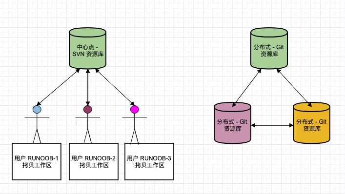
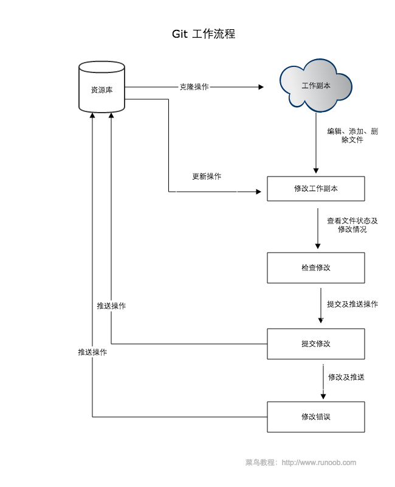
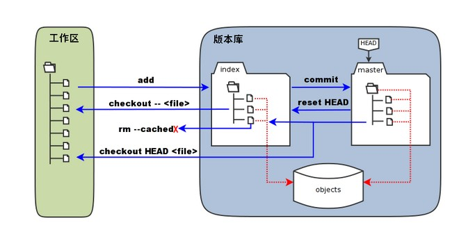

目录
- 1 Git 简介
- 2 Git 安装配置
- 3 Git 工作流程
- 4 Git 工作区、暂存区和版本库
- 5 Git 创建仓库
- 6 Git 基本命令
- 6.5 Git 文件状态
- 7 Git 分支管理
- 8 Git 查看提交历史
- 9 Git 恢复和回退
- 10 Git 标签
- 10 Git Flow
- 11 Git 进阶操作
- 12 Git 远程仓库
- 13 Git 服务器搭建
- 14 Sourcetree
- 15 VSCode中操作（GUI操作） - 15.1 初始化或打开 Git 仓库 - 15.2 基本操作流程 - 15.3 其他常用操作 - 15.4 配置 Git 信息
- 16 GUI图标
- 17 分支
- 18 GUI分支
- 19 常用命令
- 20 .gitignore
1 Git 简介
Git 是一个开源的分布式版本控制系统。
Git 与常用的版本控制工具 CVS, Subversion 等不同，它采用了分布式版本库的方式，不必服务器端软件支持。
1.1 Git 与 SVN 区别
Git 不仅仅是个版本控制系统，它也是个内容管理系统(CMS)，工作管理系统等。
-
Git 是分布式的，SVN 不是
-
Git 把内容按元数据方式存储，而 SVN 是按文件：所有的资源控制系统都是把文件的元信息隐藏在一个类似 .svn、.cvs 等的文件夹里。
-
Git 分支和 SVN 的分支不同：分支在 SVN 中一点都不特别，其实它就是版本库中的另外一个目录。
-
Git 没有一个全局的版本号，而 SVN 有
-
Git 的内容完整性要优于 SVN：Git 的内容存储使用的是 SHA-1 哈希算法。这能确保代码内容的完整性，确保在遇到磁盘故障和网络问题时降低对版本库的破坏。

1.2 Git 与 Github
Git是个版本控制的工具，用来管理本地的代码工程，它可以记录代码内容的变更；而Github是一个代码托管平台，我们可以使用Git将本地代码上传到Github。
Git工作流程

- 工作区(Workspace)：平时存放项目代码的地方
- 暂存区(Index/Stage)：用于临时存放改动信息
- 本地仓库(Repository)：存放所有提交的版本数据
- 远程仓库(Remote)：托管代码的服务器，比如我们经常用的Github就是个代码托管平台
2 Git 安装配置
跳过
检查git安装是否成功，请在cmd中键入以下内容
git -version
在GitHub上创建账户,Git和GitHub账户应该同步。基本配置，应在命令提示符中输入以下命令
git config –-global user.name "UserNameOnGithub"
git config –-global user.email "Email"
2.1 Git 配置
Git 提供了一个叫做 git config 的命令，用来配置或读取相应的工作环境变量。
这些环境变量，决定了 Git 在各个环节的具体工作方式和行为。
这些变量可以存放在以下三个不同的地方：
-
/etc/gitconfig 文件：系统中对所有用户都普遍适用的配置。若使用 git config 时用 --system 选项，读写的就是这个文件。
-
~/.gitconfig 文件：用户目录下的配置文件只适用于该用户。若使用 git config 时用 --global 选项，读写的就是这个文件。
-
当前项目的 Git 目录中的配置文件（也就是工作目录中的 .git/config 文件）：这里的配置仅仅针对当前项目有效。每一个级别的配置都会覆盖上层的相同配置，所以 .git/config 里的配置会覆盖 /etc/gitconfig 中的同名变量。
在 Windows 系统上，Git 会找寻用户主目录下的 .gitconfig 文件。主目录即 \(HOME 变量指定的目录，一般都是 C:\Documents and Settings\\)USER。
此外，Git 还会尝试找寻 /etc/gitconfig 文件，只不过看当初 Git 装在什么目录，就以此作为根目录来定位。
用户信息
配置个人的用户名称和电子邮件地址，这是为了在每次提交代码时记录提交者的信息：
git config –-global user.name "UserNameOnGithub"
git config –-global user.email "Email"
如果用了 --global 选项，那么更改的配置文件就是位于你用户主目录下的那个，以后你所有的项目都会默认使用这里配置的用户信息。
如果去掉 --global 参数只对当前仓库有效。
如果要在某个特定的项目中使用其他名字或者电邮，只要去掉 --global 选项重新配置即可，新的设定保存在当前项目的 .git/config 文件里。
文本编辑器
设置 Git 默认使用的文本编辑器,一般可能会是 Vi 或者 Vim，如果你有其他偏好，比如 VS Code 的话，可以重新设置：
git config --global core.editor "code --wait"
差异分析工具
还有一个比较常用的是，在解决合并冲突时使用哪种差异分析工具。比如要改用 vimdiff 的话：
git config --global merge.tool vimdiff
Git 可以理解 kdiff3，tkdiff，meld，xxdiff，emerge，vimdiff，gvimdiff，ecmerge，和 opendiff 等合并工具的输出信息。
当然，也可以指定使用自己开发的工具，具体怎么做可以参阅Git分支管理。
查看配置信息
git config --list
有时候会看到重复的变量名，那就说明它们来自不同的配置文件（比如 /etc/gitconfig 和 ~/.gitconfig），不过最终 Git 实际采用的是最后一个。
这些配置我们也可以在 ~/.gitconfig 或 /etc/gitconfig 看到
也可以直接查阅某个环境变量的设定，只要把特定的名字跟在后面即可：
git config user.name
编辑 git 配置文件:
git config -e # 针对当前仓库
git config -e --global # 针对系统上所有仓库
生成 SSH 密钥（可选）
如果你需要通过 SSH 进行 Git 操作，可以生成 SSH 密钥并添加到你的 Git 托管服务（如 GitHub、GitLab 等）上。
ssh-keygen -t rsa -b 4096 -C "your.email@example.com"
按提示完成生成过程，然后将生成的公钥添加到相应的平台。
验证安装
在终端或命令行中运行以下命令，确保 Git 已正确安装并配置：
git --version
git config --list
3 Git 工作流程

- 克隆仓库
如果你要参与一个已有的项目，首先需要将远程仓库克隆到本地：
>git clone https://github.com/username/repo.git
>cd repo
- 创建新分支
为了避免直接在 main 或 master 分支上进行开发，通常会创建一个新的分支：
>git checkout -b new-feature
-
工作目录
在工作目录中进行代码编辑、添加新文件或删除不需要的文件。 -
暂存文件
将修改过的文件添加到暂存区，以便进行下一步的提交操作：
>git add filename
># 或者添加所有修改的文件
>git add .
- 提交更改
将暂存区的更改提交到本地仓库，并添加提交信息：
>git commit -m "Add new feature"
- 拉取最新更改
在推送本地更改之前，最好从远程仓库拉取最新的更改，以避免冲突：
>git pull origin main
># 或者如果在新的分支上工作
>git pull origin new-feature
- 推送更改
将本地的提交推送到远程仓库：
>git push origin new-feature
-
创建 Pull Request（PR）
在 GitHub 或其他托管平台上创建 Pull Request，邀请团队成员进行代码审查。PR 合并后，你的更改就会合并到主分支。 -
合并更改
在 PR 审核通过并合并后，可以将远程仓库的主分支合并到本地分支：
>git checkout main
>git pull origin main
>git merge new-feature
- 删除分支
如果不再需要新功能分支，可以将其删除：
>git branch -d new-feature
># 或者从远程仓库删除分支：
>git push origin --delete new-feature
4 Git 工作区、暂存区和版本库
-
工作区：就是你在电脑里能看到的目录，当前项目的所有文件和子目录都属于工作区。
- 文件的修改在工作区中进行，但这些修改还没有被记录到版本控制中。
-
暂存区：英文叫 stage 或 index。一般存放在 .git 目录下的 index 文件（.git/index）中，所以我们把暂存区也叫作索引。是一个临时存储区域，它包含了即将被提交到版本库中的文件快照。
- 暂存区保存了将被包括在下一个提交中的更改。
- 你可以多次使用 git add 命令来将文件添加到暂存区，直到你准备好提交所有更改。
> git add filename # 将单个文件添加到暂存区
> git add . # 将工作区中的所有修改添加到暂存区
> git status
- 版本库：工作区有一个隐藏目录 .git 它是 Git 的版本库。包含项目的所有版本历史记录。每次提交都会在版本库中创建一个新的快照，这些快照是不可变的，确保了项目的完整历史记录。
- 版本库分为本地版本库和远程版本库。这里主要指本地版本库。
- 本地版本库存储在 .git 目录中，它包含了所有提交的对象和引用。

-
图中左侧为工作区，右侧为版本库。在版本库中标记为 "index" 的区域是暂存区（stage/index），标记为 "master" 的是 master 分支所代表的目录树。
-
图中我们可以看出此时 "HEAD" 实际是指向 master 分支的一个"游标"。所以图示的命令中出现 HEAD 的地方可以用 master 来替换。
-
图中的 objects 标识的区域为 Git 的对象库，实际位于 ".git/objects" 目录下，里面包含了创建的各种对象及内容。
-
当对工作区修改（或新增）的文件执行
git add命令时，暂存区的目录树被更新，同时工作区修改（或新增）的文件内容被写入到对象库中的一个新的对象中，而该对象的ID被记录在暂存区的文件索引中。 -
当执行提交操作
git commit时，暂存区的目录树写到版本库（对象库）中，master 分支会做相应的更新。即 master 指向的目录树就是提交时暂存区的目录树。 -
当执行
git reset HEAD命令时，暂存区的目录树会被重写，被 master 分支指向的目录树所替换，但是工作区不受影响。 -
当执行
git rm --cached <file>命令时，会直接从暂存区删除文件，工作区则不做出改变。 -
当执行
git checkout .或者git checkout -- <file>命令时，会用暂存区全部或指定的文件替换工作区的文件。这个操作很危险，会清除工作区中未添加到暂存区中的改动。 -
当执行
git checkout HEAD .或者git checkout HEAD <file>命令时，会用 HEAD 指向的 master 分支中的全部或者部分文件替换暂存区和以及工作区中的文件。这个命令也是极具危险性的，因为不但会清除工作区中未提交的改动，也会清除暂存区中未提交的改动。
4.1 工作区、暂存区和版本库之间的关系
- 工作区 -> 暂存区 使用 git add 命令将工作区中的修改添加到暂存区。
> git add filename
- 暂存区 -> 版本库 使用 git commit 命令将暂存区中的修改提交到版本库。
> git commit -m "Commit message"
- 版本库 -> 远程仓库 使用 git push 命令将本地版本库的提交推送到远程仓库。
> git push origin branch-name
- 远程仓库 -> 本地版本库 使用 git pull 或 git fetch 命令从远程仓库获取更新。
> git pull origin branch-name
> # 或者
> git fetch origin branch-name
> git merge origin/branch-name
5 Git 创建仓库
三种方式
1、 从创建一个新的目录开始
mkdir my-project
cd my-project
使用当前目录作为 Git 仓库，我们只需使它初始化。
git init
该命令执行完后会在当前目录生成一个 .git 目录。
2、 从已有目录作为Git仓库。
git init newrepo
初始化后，会在 newrepo 目录下会出现一个名为 .git 的目录，所有 Git 需要的数据和资源都存放在这个目录中。
如果当前目录下有几个文件想要纳入版本控制，需要先用 git add 命令告诉 Git 开始对这些文件进行跟踪，然后提交：
git add *.c
git add README
git commit -m '初始化项目版本'
以上命令将目录下以 .c 结尾及 README 文件提交到仓库中。
注： 在 Linux 系统中，commit 信息使用单引号 '，Windows 系统，commit 信息使用双引号 "。
3、从现有 Git 仓库中拷贝项目
git clone <repo>
# 如果需要克隆到指定的目录，可以使用
git clone <repo> <directory>
- repo：Git 仓库。
- directory：本地目录。
6 Git 基本命令
6.1 创建仓库
| 命令 | 说明 |
|---|---|
| git init | 初始化仓库 |
| git clone | 拷贝一份远程仓库，也就是下载一个项目 |
6.2 提交与修改
| 命令 | 说明 |
|---|---|
| git add | 添加文件到暂存区 |
| git status | 查看仓库当前的状态，显示有变更的文件 |
| git diff | 比较文件的不同，即暂存区和工作区的差异 |
| git difftool | 使用外部差异工具查看和比较文件的更改 |
| git range-diff | 比较两个提交范围之间的差异 |
| git commit | 提交暂存区到本地仓库 |
| git reset | 回退版本 |
| git rm | 将文件从暂存区和工作区中删除 |
| git mv | 移动或重命名工作区文件 |
| git notes | 添加注释 |
| git checkout | 分支切换 |
| git switch （Git 2.23 版本引入） | 更清晰地切换分支 |
| git restore （Git 2.23 版本引入） | 恢复或撤销文件的更改 |
| git show | 显示 Git 对象的详细信息 |
6.3 提交日志
| 命令 | 说明 |
|---|---|
| git log | 查看历史提交记录 |
| git blame |
以列表形式查看指定文件的历史修改记录 |
| git shortlog | 生成简洁的提交日志摘要 |
| git describe | 生成一个可读的字符串，该字符串基于 Git 的标签系统来描述当前的提交 |
6.4 远程操作
| 命令 | 说明 |
|---|---|
| git remote | 远程仓库操作 |
| git fetch | 从远程获取代码库 |
| git pull | 下载远程代码并合并 |
| git push | 上传远程代码并合并 |
| git submodule | 管理包含其他 Git 仓库的项目 |
6.5 Git 文件状态
未跟踪（Untracked）：新创建的文件，未被 Git 记录。
已跟踪（Tracked）： 通过 git add 命令将未跟踪的文件添加到暂存区后，文件变为已跟踪状态。
已修改（Modified）：已被 Git 跟踪的文件发生了更改，但这些更改还没有被提交到 Git 记录中。
已暂存（Staged）： 使用 git add 命令将修改过的文件添加到暂存区后，文件进入已暂存状态，等待提交。
已提交（Committed）： 使用 git commit 命令将暂存区的更改提交到本地仓库后，这些更改被记录下来，文件状态返回为已跟踪状态。
7 Git 分支管理
能够让多个开发人员并行工作，开发新功能、修复 bug 或进行实验，而不会影响主代码库。
Git 分支实际上是指向更改快照的指针。

7.1 创建与切换分支
创建新分支：
git branch <branch_name>
创建新分支并切换到该分支：(checkout 是老版本，新版switch)
git checkout -b <branch_name>
切换分支：
git checkout <branch_name>
注：当你切换分支的时候，Git 会用该分支的最后提交的快照替换你的工作目录的内容， 所以多个分支不需要多个目录。
7.2 查看分支
查看所有分支：
git branch
查看远程分支：
git branch -r
查看所有本地和远程分支：
git branch -a
7.3 合并分支
将其他分支合并到当前分支：
git merge <branch_name>
git merge [被合并的分支] -> 合并到 [你当前的分支] 上
7.4 删除分支
删除本地分支：
git branch -d <branch_name>
强制删除未合并的分支：
git branch -D <branch_name>
删除远程分支：
git push origin --delete <branch_name>
7.5 最常用分支命令
# 1. 查看所有分支（当前分支前面有 *）
git branch
# 2. 新建分支
git branch 分支名
# 3. 切换分支
git switch 分支名
# 4. 新建 + 立刻切换
git switch -c 分支名
# 5. 把分支合并到当前所在分支
git merge 要合并的分支名
# 6. 删除本地分支
git branch -d 分支名
# 7. 把本地分支推送到远程
git push origin 分支名
# 8. 查看本地 + 远程所有分支
git branch -a
7.6 完整工作流程
7.6.1 永远从最新主分支开新功能
# 切到主分支
git switch main
# 拉取最新代码（保证你的主分支是最新的）
git pull
7.6.2 创建你的功能分支
git switch -c feature-login
现在你进入独立开发空间，随便写代码，不影响主分支。
7.6.3 在分支上正常写代码、提交
git add .
git commit -m "完成登录功能"
7.6.4 写完了，合并回主分支
先切回主分支
git switch main
再合并你的功能分支
git merge feature-login
合并成功后，推送到远程
git push
7.6.5 合并完，删除旧分支
git branch -d feature-login
7.7 主分支被改，怎么同步到你的分支？
场景： 你在写分支，同事更新了 main 分支，你想把最新主分支代码拿到你的分支里。
# 1. 切到 main，拉最新
git switch main
git pull
# 2. 切回你的分支
git switch feature-login
# 3. 把 main 合并进来
git merge main
你的分支就变成最新代码 + 你的新功能了。
7.8 遇到冲突怎么办？
Git 提示：
Automatic merge failed; fix conflicts and then commit the result.
解决方法： 1. 打开 VS Code 2. 点文件里的冲突标记 3. 选择：
- Accept Current Change（保留当前）
- Accept Incoming Change（保留 incoming）
- Accept Both（都保留）
- 保存文件
- 提交
git add .
git commit -m "解决冲突"
7.9 远程分支操作
7.9.1 把本地分支发到远程
git push origin feature-login
7.9.2 拉取别人创建的远程分支
git fetch
git switch 分支名
7.9.3 删除远程分支
git push origin --delete 分支名
7.10分支模板
1. 切回主分支
git switch main
2. 拉最新（把远程主分支同步到本地）
git pull
3. 切回你的分支
git switch feature-login
4. 把最新主分支合并进你的分支（让你的分支变最新）
git merge main
5. 再切回主分支
git switch main
6. 把你的功能合并进主分支
git merge feature-login
7. 推送到网上
git push
8. 删除分支（清理）
git branch -d feature-login
8 Git 查看提交历史
查看 Git 提交历史可以帮助你了解代码的变更情况和开发进度。
Git 提供了多种命令和选项来查看提交历史，从简单的日志到详细的差异对比。
- git log - 查看历史提交记录。
- git blame
- 以列表形式查看指定文件的历史修改记录。
8.1 git log
查看 Git 仓库中提交历史记录，包括提交的哈希值、作者、提交日期和提交消息等。
基本语法：
git log [选项] [分支名/提交哈希]
常用的选项包括：
- -p：显示提交的补丁（具体更改内容）。
- --oneline：以简洁的一行格式显示提交信息。
- --graph：以图形化方式显示分支和合并历史。
- --decorate：显示分支和标签指向的提交。
- --author=<作者>：只显示特定作者的提交。
- --since=<时间>：只显示指定时间之后的提交。
- --until=<时间>：只显示指定时间之前的提交。
- --grep=<模式>：只显示包含指定模式的提交消息。
- --no-merges：不显示合并提交。
- --stat：显示简略统计信息，包括修改的文件和行数。
- --abbrev-commit：使用短提交哈希值。
- --pretty=<格式>：使用自定义的提交信息显示格式。
8.2 git blame
逐行显示指定文件的每一行代码是由谁在什么时候引入或修改的，包括作者、提交哈希、提交日期和提交消息等信息。
git blame [选项] <文件路径>
常用的选项包括：
- -L <起始行号>,<结束行号>：只显示指定行号范围内的代码注释。
- -C：对于重命名或拷贝的代码行，也进行代码行溯源。
- -M：对于移动的代码行，也进行代码行溯源。
- -C -C 或 -M -M：对于较多改动的代码行，进行更进一步的溯源。
- --show-stats：显示包含每个作者的行数统计信息。
9 Git 恢复和回退
Git 提供了多种方式来恢复和回退到之前的版本，不同的命令适用于不同的场景和需求。
以下是几种常见的方法：
- git checkout：切换分支或恢复文件到指定提交。
- git reset：重置当前分支到指定提交（软重置、混合重置、硬重置）。
- git revert：创建一个新的提交以撤销指定提交，不改变提交历史。
- git reflog：查看历史操作记录，找回丢失的提交。
9.1 git checkout
恢复工作目录中的文件到某个提交：
git checkout <commit> -- <filename>
例如，将 file.txt 恢复到 abc123 提交时的版本：
git checkout abc123 -- file.txt
切换到特定提交：
git checkout <commit>
例如：
git checkout abc123
这种方式切换到特定的提交时，处于分离头指针（detached HEAD）状态。
9.2 git reset
git reset 命令可以更改当前分支的提交历史，它有三种主要模式：--soft、--mixed 和 --hard。
--soft：只重置 HEAD 到指定的提交，暂存区和工作目录保持不变。
git reset --soft <commit>
--mixed（默认）：重置 HEAD 到指定的提交，暂存区重置，但工作目录保持不变。
git reset --mixed <commit>
--hard：重置 HEAD 到指定的提交，暂存区和工作目录都重置。
git reset --hard <commit>
例如，将当前分支重置到 abc123 提交：
git reset --hard abc123
9.3 git revert
git revert 命令创建一个新的提交，用来撤销指定的提交，它不会改变提交历史，适用于已经推送到远程仓库的提交。
git revert <commit>
例如，撤销 abc123 提交：
git revert abc123
9.4 git reflog
git reflog 命令记录了所有 HEAD 的移动。即使提交被删除或重置，也可以通过 reflog 找回。
git reflog
利用 reflog 可以找到之前的提交哈希，从而恢复到特定状态。例如：
git reset --hard HEAD@{3}
9.5 示例
查看提交历史：
git log --oneline
假设输出如下：
abc1234 Commit 1
def5678 Commit 2
ghi9012 Commit 3
切换到 Commit 2（处于分离头指针状态）：
git checkout def5678
重置到 Commit 2，保留更改到暂存区：
git reset --soft def5678
重置到 Commit 2，取消暂存区更改：
git reset --mixed def5678
重置到 Commit 2，丢弃所有更改：
git reset --hard def5678
撤销 Commit 2：
git revert def5678
查看 reflog 找回丢失的提交：
git reflog
找到之前的提交哈希并恢复：
git reset --hard HEAD@{3}
10 Git 标签
如果你达到一个重要的阶段，并希望永远记住提交的快照，你可以使用 git tag 给它打上标签。
比如说，我们想为我们的 test 项目发布一个 "1.0" 版本，我们可以用 git tag -a v1.0 命令给最新一次提交打上（HEAD） "v1.0" 的标签。
-a 选项意为"创建一个带注解的标签"，它会记录这标签是啥时候打的，谁打的。不用 -a 选项也可以执行，但我们推荐一直创建带注解的标签。
当你执行 git tag -a 命令时，Git 会打开你的编辑器，让你写一句标签注解，就像你给提交写注解一样。
git tag <tagname>
如果我们忘了给某个提交打标签，又将它发布了，我们可以给它追加标签。
git tag -a <tagname> <commit>
如果我们要查看所有标签可以使用以下命令：
git tag
推送标签到远程仓库
默认情况下，git push 不会推送标签，你需要显式地推送标签。
git push origin <tagname>
推送所有标签：
git push origin --tags
删除标签
本地删除：
git tag -d <tagname>
远程删除：
git push origin --delete <tagname>
附注标签
git tag -a <tagname> -m "message"
查看标签信息：
git show <tagname>
10 Git Flow
Git Flow 是一种基于 Git 的分支模型。
Git Flow 主要由以下几类分支组成：
-
主分支（main/master）
- 永远保持稳定和可发布的状态。
- 每次发布一个新的版本时，都会从 develop 分支合并到 master 分支。
-
开发分支（develop）
- 代表了最新的开发进度。
- 功能分支、发布分支和修复分支都从这里分支出去，最终合并回这里。
-
功能分支（feature）
- 从 develop 分支创建，用于开发新功能。
- 用于开发新功能。
- 命名规范：feature/feature-name。
-
发布分支（release）
- 从 develop 分支创建，用于准备发布。
- 用于准备新版本的发布。
- 命名规范：release/release-name。
-
热修复分支（hotfix）
- 从 main 分支创建，修复完成后合并回 master 和 develop 分支，并打上版本标签。
- 用于紧急修复生产问题。
- 命名规范：hotfix/hotfix-name。

Master 分支上的每个 Commit 应打上 Tag，Develop 分支基于 Master 创建。
Feature 分支完成后合并回 Develop 分支，并通常删除该分支。
Release 分支基于 Develop 创建，用于测试和修复 Bug，发布后合并回 Master 和 Develop，并打 Tag 标记版本号。
Hotfix 分支基于 Master 创建，完成后合并回 Master 和 Develop，并打 Tag。
10.1 Git Flow 安装
在 Windows 上，你可以通过以下方式安装 Git Flow：
使用 Git for Windows: 其中包含了 Git Flow。你可以从 Git for Windows 安装 Git，然后使用 Git Bash 来使用 Git Flow。
10.2 Git Flow 工作流程
1.初始化 Git Flow
首先，在项目中初始化 Git Flow。可以使用 Git Flow 插件（例如 git-flow）来简化操作。
git flow init
初始化时，你需要设置分支命名规则和默认分支。
2.创建功能分支
当开始开发一个新功能时，从 develop 分支创建一个功能分支。
git flow feature start feature-name
完成开发后，将功能分支合并回 develop 分支，并删除功能分支。
git flow feature finish feature-name
3.创建发布分支
当准备发布一个新版本时，从 develop 分支创建一个发布分支。
git flow release start release-name
在发布分支上进行最后的测试和修复，准备好发布后，将发布分支合并回 develop 和 master 分支，并打上版本标签。
git flow release finish release-name
4.创建修复分支
当发现需要紧急修复的问题时，从 master 分支创建一个修复分支。
git flow hotfix start hotfix-name
修复完成后，将修复分支合并回 master 和 develop 分支，并打上版本标签。
git flow hotfix finish hotfix-name
11 Git 进阶操作
11.1 Git Stash
允许你临时保存当前工作目录的更改，以便你可以切换到其他分支或处理其他任务。
保存当前工作进度：
git stash
查看存储的进度：
git stash list
应用最近一次存储的进度：
git stash apply
应用并删除最近一次存储的进度：
git stash pop
删除特定存储：
git stash drop stash@{n}
清空所有存储：
git stash clear
11.2 Git Rebase
变基：将一个分支上的更改移到另一个分支之上。它可以帮助保持提交历史的线性，减少合并时的冲突。
变基当前分支到指定分支：
git rebase <branchname>
例如，将当前分支变基到 main 分支：
git rebase main
交互式变基：
git rebase -i <commit>
交互式变基允许你在变基过程中编辑、删除或合并提交。常用选项包括：
- pick：保留提交
- reword：修改提交信息
- edit：编辑提交
- squash：将当前提交与前一个提交合并
- fixup：将当前提交与前一个提交合并，不保留提交信息
- drop：删除提交
11.3 Git Cherry-Pick
允许你选择特定的提交并将其应用到当前分支。它在需要从一个分支移植特定更改到另一个分支时非常有用。
git cherry-pick <commit>
例如，将 abc123 提交应用到当前分支：
git cherry-pick abc123
12 Git 远程仓库
常用远程仓库及简单教程
GitHub：https://www.runoob.com/w3cnote/git-guide.html
GitLab：https://about.gitlab.com/
Gitee：https://gitee.com/help/articles/
12.1 关联远程仓库
如果已有远程仓库（例如在 GitHub 手动创建的空仓库），可通过命令关联：
-
复制远程仓库的 URL
登录 GitHub/GitLab，进入你的远程仓库页面，点击 “Code” 按钮，复制仓库的 HTTPS 或 SSH 地址（例如https://github.com/你的用户名/仓库名.git）。 -
在 VS Code 中打开终端
快捷键：Ctrl+`（反引号），或点击菜单栏「终端」→「新建终端」。 -
执行关联命令
在终端中输入以下命令（替换为你的远程仓库 URL）：
> git remote add origin https://github.com/你的用户名/仓库名.git
> - `origin` 是远程仓库的默认别名（可自定义，但通常用 `origin`）。
- 首次推送并绑定分支
关联后，第一次推送需要指定分支并绑定（以main分支为例）：
> git push -u origin main
> - `-u` 表示将本地 `main` 分支与远程 `main` 分支绑定，后续可直接用 `git push` 推送。
12.2 验证是否关联成功
在终端输入以下命令，若显示远程仓库 URL，则说明关联成功：
git remote -v
输出类似：
origin https://github.com/你的用户名/仓库名.git (fetch)
origin https://github.com/你的用户名/仓库名.git (push)
12.3 常见问题解决
- 若提示
fatal: remote origin already exists：表示已关联过远程仓库，可先删除旧关联再重新添加：
git remote rm origin # 删除旧关联
git remote add origin 新的远程URL # 添加新关联
- 若推送失败（提示权限问题）：检查是否已登录正确账号，或远程仓库是否设置了访问权限。
12.4 提取远程仓库
1、从远程仓库下载新分支与数据：
git fetch
该命令执行完后需要执行 git merge 远程分支到你所在的分支。
2、从远端仓库提取数据并尝试合并到当前分支：
git merge
该命令就是在执行 git fetch 之后紧接着执行 git merge 远程分支到你所在的任意分支。

13 Git 服务器搭建
Github 公开的项目是免费的，2019 年开始 Github 私有存储库也可以无限制使用。我们也可以自己搭建一台 Git 服务器作为私有仓库使用。
13.1 使用裸存储库（Bare Repository）
1、安装Git
接下来我们 创建一个 git 用户组和用户，用来运行git服务：
$ groupadd git
$ useradd git -g git
2、创建裸存储库
登录到 Git 用户，然后在其 home 目录下创建一个裸存储库。
$ sudo su - git
首先我们选定一个目录作为 Git 仓库，假定是 /home/gitrepo/runoob.git，在 /home/gitrepo 目录下输入命令：
$ cd /home
$ mkdir gitrepo
$ chown git:git gitrepo/
$ cd gitrepo
$ git init --bare runoob.git
以上命令Git创建一个空仓库，服务器上的 Git 仓库通常都以 .git 结尾。然后，把仓库所属用户改为 git（如果是其他用户操作，比如 root）：
$ chown -R git:git runoob.git
3、创建证书登录
将你的公钥添加到 ~/.ssh/authorized_keys 中，允许远程访问。
收集所有需要登录的用户的公钥，公钥位于 id_rsa.pub 文件中，把我们的公钥导入到 /home/git/.ssh/authorized_keys 文件里，一行一个。
如果没有该文件创建它：
$ cd /home/git/
$ mkdir .ssh
$ chmod 755 .ssh
$ touch .ssh/authorized_keys
$ chmod 644 .ssh/authorized_keys
# 在文件中添加你的 SSH 公钥
4、克隆仓库
$ git clone git@192.168.45.4:/home/gitrepo/runoob.git
Cloning into 'runoob'...
warning: You appear to have cloned an empty repository.
Checking connectivity... done.
192.168.45.4 为 Git 所在服务器 ip ，你需要将其修改为你自己的 Git 服务 ip。
这样我们的 Git 服务器安装就完成。
14 Sourcetree
Git 有很多图形界面工具 ( GUI )，比如 SourceTree、Github Desktop、TortoiseGit 等。
SourceTree 是一个 Git 客户端管理工具，适用于 Windows 和 Mac 系统。
可以通过界面菜单很方便的处理 Git 操作，而不需要通过命令。
通过 SourceTree，我们可以管理所有的 Git 库，无论是远程还是本地的。SourceTree 支持 Bitbucket、GitHub 以及 Gitlab 等远程仓库。
-----------------------------------------
15 VSCode中操作（GUI操作）
在 VS Code 中使用 Git 非常方便，它内置了对 Git 的集成支持，无需额外安装插件即可完成大部分 Git 操作。
15.1 初始化或打开 Git 仓库
-
新建仓库：
打开项目文件夹后，点击左侧边栏的 源代码管理 图标（类似分支的图标），然后点击 初始化仓库，将当前文件夹转为 Git 仓库。 -
打开已有仓库：
直接用 VS Code 打开包含.git文件夹的项目，会自动识别为 Git 仓库。
15.2 基本操作流程
① 暂存更改（Stage Changes）
- 对文件修改后，在 源代码管理 面板中会显示更改的文件：
- U（未跟踪）：新创建的文件，尚未加入 Git 管理
- M（已修改）：已跟踪文件被修改
- D（已删除）：已跟踪文件被删除
- A （Added） :表示这个文件是新添加到暂存区的文件
- R （Renamed）：文件被重命名后暂存
- 点击文件右侧的 + 号，将更改暂存到暂存区（Stage）；或点击面板顶部的 + 暂存所有更改。
② 提交更改（Commit）
- 暂存后，在面板顶部的输入框中填写 提交信息（描述本次修改的内容），然后点击输入框下方的 √ 按钮，完成提交。
- 快捷键：
Ctrl+Enter（提交）
③ 推送到远程仓库（Push）
- 首次推送需要关联远程仓库：
点击面板中的 发布到 GitHub（或其他平台），按提示登录并创建远程仓库，或手动添加远程地址：
# 在终端中执行
git remote add origin <远程仓库URL>
- 后续推送：点击面板中的 ↑ 按钮，将本地提交推送到远程仓库。
④ 拉取远程更新（Pull）
- 当远程仓库有新内容时，点击面板中的 ↓ 按钮，拉取远程更新到本地。
- 若存在冲突，VS Code 会提示并提供可视化的冲突解决界面。
15.3 其他常用操作
分支管理
- 查看分支：点击左下角的分支名称（默认显示
main或master）。 - 创建分支：点击分支名称 → 创建新分支，输入分支名后回车。
- 切换分支：在分支列表中点击目标分支即可切换。
- 合并分支：切换到目标分支（如
main），右键需要合并的分支 → 合并到当前分支。
查看历史记录
- 点击源代码管理面板中的 更多操作（...）→ 查看历史记录，可查看所有提交记录，包括作者、时间、修改内容等。
对比文件修改
- 在更改列表中点击文件，右侧会显示 差异对比：
- 红色：删除的内容
- 绿色：新增的内容
- 可直接在对比界面编辑文件。
终端操作
- 若需要执行复杂的 Git 命令，可打开 VS Code 终端（
Ctrl+`），直接输入 Git 命令，例如：
git checkout -b 新分支名 # 创建并切换分支
git reset --hard HEAD~1 # 撤销最近一次提交
git log --oneline # 简洁显示提交历史
15.4 配置 Git 信息
首次使用需配置用户名和邮箱（用于提交记录）：
# 在终端中执行
git config --global user.name "你的名字"
git config --global user.email "你的邮箱"
16 GUI图标
左下角的main说明处在main这个分支
'*' 代表当前分支有未提交的修改
'+' 代表有已添加未提交的修改
'↑' 代表本地提交需要推送到云端
'↓' 有提交需要从云端拉取
这是 VS Code 「源代码管理」面板的功能菜单，每个选项对应 Git 的核心操作，以下是详细说明：
-
拉取
-
功能：从远程仓库（如 Gitee、GitHub）拉取最新代码到本地，同步远程的更新。
-
场景：团队协作时，他人提交了新代码，你需要更新本地仓库时使用。
-
推送
-
功能：将本地已提交的代码推送到远程仓库，同步本地的修改。
-
场景：你在本地完成开发并提交后，需要把代码分享到远程时使用。
-
克隆
-
功能：从远程仓库复制整个项目到本地（包括所有分支、提交记录）。
-
场景：首次获取别人的项目或自己的远程仓库到本地时使用。
-
签出到...
-
功能：切换到其他分支、标签或历史提交版本（“签出”即切换分支/版本）。
-
场景：需要切换到
dev分支开发新功能，或回退到某个历史版本调试时使用。 -
抓取
-
功能：从远程仓库获取所有分支和提交记录（但不合并到本地分支）。
- 区别：
拉取=抓取 + 合并；抓取仅获取信息，需手动合并。 -
场景：想先查看远程有哪些更新，再决定是否合并时使用。
-
提交
-
子菜单包含「提交」「全部提交」等选项：
- 提交：将本地暂存的修改记录到本地仓库（需填写提交信息）。
- 提交所有更改并推送：自动将 所有修改的文件（包括未暂存的） 暂存并提交到本地仓库。
普通提交（无后缀）是最常用的流程，需手动暂存 + 提交。
“全部提交” 可简化 “暂存 + 提交” 步骤，适合快速迭代。
“(修改)” 系列强调是对已有分支的增量更新。
“(已签名)” 系列用于需要身份验证的场景（如开源项目的贡献者验证）。
日常开发用 “提交” 或 “全部提交”；需要身份签名时选 “已签名” 系列；操作失误时用 “撤消上次提交” 回退。 -
更改
-
子菜单包含「暂存所有更改」「取消暂存所有更改」等选项：
- 暂存所有更改：将所有修改的文件加入「暂存区」（相当于
git add .）。 - 取消暂存所有更改：将暂存区的文件移出（相当于
git reset）。
- 暂存所有更改：将所有修改的文件加入「暂存区」（相当于
-
拉取，推送
-
子菜单包含「拉取（所有分支）」「推送（所有分支）」等选项：
- 批量操作多个分支的拉取/推送，适合多分支管理的场景。
-
分支
-
子菜单包含「创建分支」「合并分支」「删除分支」等选项：
- 图形化管理分支的创建、切换、合并、删除，无需记命令。
-
远程
-
子菜单包含「添加远程」「移除远程」「重命名远程」等选项：
- 管理远程仓库的关联（如添加 Gitee 远程、删除旧的远程仓库）。
-
存储
-
功能：临时保存未提交的修改（相当于
git stash），可在后续恢复。 -
场景：需要切换分支但本地有未提交的修改时，先存储再切换。
-
标记
-
功能：给特定提交记录打标签（如
v1.0），用于版本发布或重要节点标记。 -
工作树
-
功能：管理多个工作目录（Git 2.5+ 特性），可在不同目录中并行开发同一仓库的不同分支。
-
显示 GIT 输出
-
功能：打开 Git 命令的详细日志窗口，方便排查拉取、推送、提交时的错误。
17 分支
分支管理是版本控制中一个很重要的内容，在Git中主要有切换/创建分支(checkout)、合并分支(merge)两个指令。下面是部分分支操作的指令和图示
- 圆圈表示一个提交(commit)记录
- 矩形表示分支，它指向一个提交记录，由这个记录可以遍历之前所有的提交记录
第一步：初始化了一个git，这个git中只有一个master分支，包含两个commit记录

第二步：现在我们创建一个新分支，命名为develop：
git checkout -b develop # 表示创建并切换到develop分支

此时master分支和develop分支都指向C1这个提交记录。
第三步：我们分别在这两个分支上进行修改并提交：
git commit
git checkout master # 切换到master分支
git commit

可以看到master分支和develop分支指向了不同的提交记录
第四步：接下来我们将develop分支合并到master分支中
git merge develop

执行上面的指令后，产生了一个新的提交记录C4，由C4我们可以遍历之前所有的提交记录，但是此时master分支和develop分支仍然指向不同的提交记录。
第五步：继续切换到develop分支，将master分支合并到develop分支中
git checkout develop
git merge master

18 GUI分支
点击左下角图标
三个选项
- 创建新分支：从当前分支创建
- 创建新分支依据：从当前分支移动到其他分支创建
- 签出已分离：创建临时分支。未正式保存临时分支，而离开时，会删除该分支和其提交
命名建议：
feature/功能名（新功能）、fix/问题描述（修复bug）、docs/文档说明（文档更新）
19 常用命令
19.1 仓库初始化与配置
| 命令 | 作用 |
|---|---|
git init |
在当前目录初始化 Git 仓库（创建 .git 文件夹） |
git clone <远程地址> |
克隆远程仓库到本地（如 git clone https://gitee.com/xxx.git） |
git config --global user.name "用户名" |
设置全局用户名（所有仓库生效） |
git config --global user.email "邮箱" |
设置全局邮箱 |
git config user.name "用户名" |
设置当前仓库单独的用户名（覆盖全局） |
git config --list |
查看当前 Git 配置（全局加 --global） |
19.2 文件暂存与提交
| 命令 | 作用 |
|---|---|
git add <文件名> |
暂存单个文件（如 git add README.md） |
git add . |
暂存当前目录所有修改（包括新增、修改，忽略 .gitignore 文件） |
git add -u |
暂存已跟踪文件的修改（不包括新增文件） |
git commit -m "提交信息" |
提交暂存区文件到本地仓库（需填写描述） |
git commit -am "提交信息" |
跳过暂存，直接提交所有已跟踪文件的修改（新增文件不生效） |
git commit --amend |
追加修改到上一次提交（用于修正最近的提交） |
git status |
查看文件状态（未跟踪、已暂存、已提交） |
git diff |
查看未暂存的修改内容 |
git diff --staged |
查看已暂存但未提交的修改内容 |
19.3 分支管理
| 命令 | 作用 |
|---|---|
git branch |
查看本地所有分支（当前分支前带 *） |
git branch -r |
查看远程所有分支 |
git branch -a |
查看本地 + 远程所有分支 |
git branch <分支名> |
创建新分支（如 git branch feature/login） |
git checkout <分支名> |
切换到指定分支（如 git checkout dev） |
git checkout -b <分支名> |
创建并切换到新分支（相当于 branch + checkout） |
git merge <分支名> |
合并指定分支到当前分支（如 git merge feature/login） |
git branch -d <分支名> |
删除本地分支（需先切换到其他分支，分支已合并才允许删除） |
git branch -D <分支名> |
强制删除本地未合并的分支 |
git push origin --delete <分支名> |
删除远程分支（如 git push gitee --delete feature/login） |
19.4 远程仓库操作
| 命令 | 作用 |
|---|---|
git remote add <别名> <远程地址> |
关联远程仓库（如 git remote add gitee https://gitee.com/xxx.git） |
git remote -v |
查看已关联的远程仓库（别名和地址） |
git remote remove <别名> |
取消关联远程仓库（如 git remote remove gitee） |
git fetch <远程别名> |
从远程拉取所有分支信息（不合并到本地） |
git pull <远程别名> <分支名> |
拉取远程分支并合并到本地当前分支（如 git pull gitee main） |
git push <远程别名> <分支名> |
推送本地分支到远程（如 git push gitee main） |
git push -u <远程别名> <分支名> |
推送并绑定本地分支与远程分支（后续可简化为 git push） |
19.5 版本回退与历史查看
| 命令 | 作用 |
|---|---|
git log |
查看提交历史（按时间倒序，显示哈希、作者、时间、信息） |
git log --oneline |
简洁显示提交历史（仅哈希前7位和提交信息） |
git log --graph |
图形化显示分支合并历史 |
git reset --hard <提交哈希> |
回退到指定版本（哈希可通过 git log 获取，谨慎使用） |
git reset --soft HEAD^ |
撤销上一次提交（保留修改内容，回到暂存状态） |
git revert <提交哈希> |
创建新提交来抵消指定提交的修改（安全回退，不删除历史） |
git reflog |
查看所有操作记录（包括已删除的提交，用于找回误删版本） |
19.6 标签管理（用于版本发布）
| 命令 | 作用 |
|---|---|
git tag |
查看所有标签 |
git tag <标签名> |
给当前提交打标签（如 git tag v1.0） |
git tag <标签名> <提交哈希> |
给指定提交打标签 |
git tag -a <标签名> -m "标签说明" |
创建带说明的标签 |
git push <远程别名> <标签名> |
推送标签到远程（如 git push gitee v1.0） |
git push <远程别名> --tags |
推送所有标签到远程 |
git tag -d <标签名> |
删除本地标签 |
git push <远程别名> --delete <标签名> |
删除远程标签 |
19.7 其他常用命令
| 命令 | 作用 |
|---|---|
git stash |
临时存储未提交的修改（用于切换分支前保存工作进度） |
git stash pop |
恢复最近一次存储的修改，并删除存储记录 |
git stash list |
查看所有存储的修改 |
git rm <文件名> |
删除文件并暂存删除操作（相当于 rm + git add） |
git rm --cached <文件名> |
取消跟踪文件（文件保留在本地，仅从 Git 管理中移除） |
git checkout -- <文件名> |
丢弃未暂存的修改（恢复到最近一次提交的状态） |
19.8 使用建议
- 日常开发高频命令：
git add .、git commit -m ""、git pull、git push、git branch、git checkout。 - 复杂操作（如回退版本、解决冲突）建议先通过
git status和git log确认当前状态，避免误操作。 - 多平台（GitHub/Gitee）管理时，用不同远程别名区分（如
origin对应 GitHub，gitee对应 Gitee）。
掌握这些命令可满足绝大多数开发场景，遇到问题时可通过 git <命令> --help 查看官方文档（如 git commit --help）。
20 .gitignore
.gitignore 文件用于告诉 Git 哪些文件或文件夹不需要纳入版本控制（避免提交垃圾文件、敏感信息或环境相关文件）
20.1 基础语法规则
- # 注释：以
#开头的行是注释，会被 Git 忽略。 - 匹配文件/文件夹：直接写文件名或路径（如
logs/忽略 logs 文件夹）。 - 通配符
*：匹配任意字符（如*.pyc忽略所有.pyc后缀的文件）。 - 递归匹配
**：匹配任意层级的目录（如**/temp/忽略所有目录下的 temp 文件夹）。 - 排除规则
!：在匹配规则前加!表示“不忽略”（如!important.txt保留 important.txt，即使它被前面的规则匹配）。 -
路径分隔符
/：- 末尾加
/表示匹配文件夹（如venv/忽略 venv 文件夹，而venv会同时忽略名为 venv 的文件或文件夹）。 - 开头加
/表示仅匹配项目根目录下的文件（如/README.md只忽略根目录的 README.md，子目录的不忽略）。
- 末尾加
20.2 通用模板
在项目根目录创建 .gitignore 文件，复制以下内容（根据需求删减）：
# Python 虚拟环境（必须忽略）
.venv/
venv/
env/
ENV/
# 字节码文件（Python 编译产物）
__pycache__/
*.py[cod]
*$py.class
# 日志文件
logs/
*.log
# 临时文件
tmp/
temp/
*.tmp
*.temp
# 操作系统自动生成的文件
.DS_Store # macOS
Thumbs.db # Windows
desktop.ini # Windows
# 编辑器配置文件（根据你的编辑器添加）
.idea/ # PyCharm
.vscode/ # VS Code（如需共享配置，可删除此行）
*.swp # Vim 临时文件
*.swo # Vim 临时文件
# 环境变量文件（可能包含密码、密钥）
.env
.env.local
.env.*.local
# 打包/分发文件
dist/
build/
*.egg-info/
*.whl
# 数据库文件
*.db
*.sqlite3
# 个人笔记/草稿（根据需要添加）
notes/
*.bak # 备份文件
20.3 其他
-
按项目类型选择模板：
不同项目（Python/Java/前端等）有不同的忽略需求，可直接使用 GitHub 官方.gitignore模板库 中的现成模板（搜索对应语言，如Python.gitignore）。 -
本地专属忽略：
若某些文件仅需自己忽略（不共享给团队），可编辑.git/info/exclude文件（作用同.gitignore，但不会提交到仓库）。 -
生效方式：
新建.gitignore后，需要提交到仓库才能让团队成员共享规则：
> git add .gitignore
> git commit -m "添加 .gitignore 忽略不必要文件"
- 已提交的文件如何忽略：
若文件已被 Git 跟踪（之前提交过），需先移除跟踪，再忽略：
> git rm --cached 文件名 # 移除跟踪（本地文件保留）
> git commit -m "停止跟踪 xxx 文件"